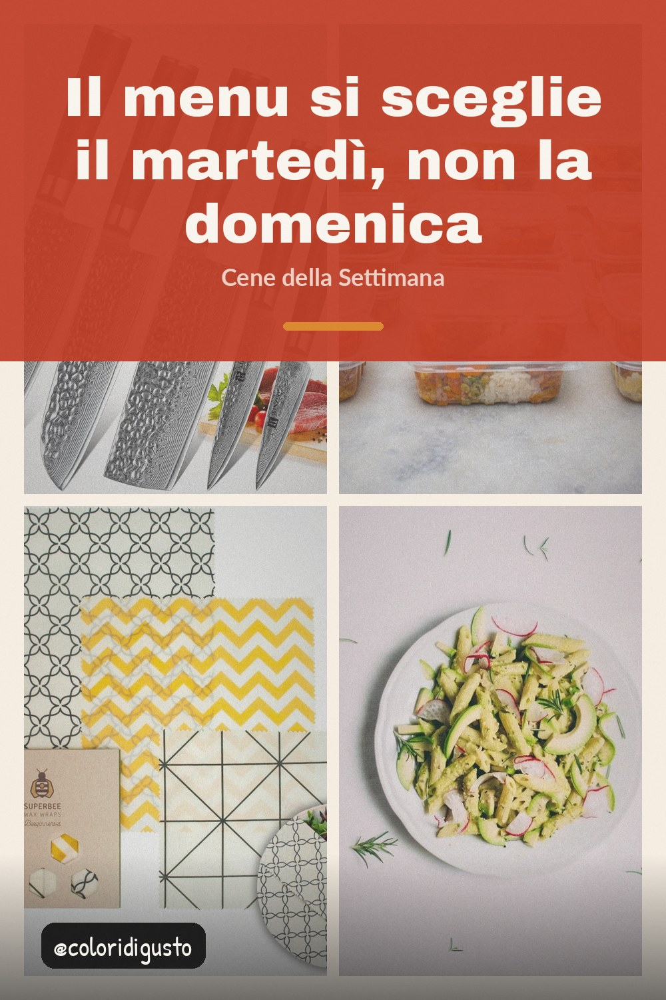

Trentacinque minuti di programmazione per cinque cene che riescono a fare con quello che c'è in frigo.

La programmazione della settimana fallisce quasi sempre per un motivo: si fa quando si ha tempo di pensare, cioè di rado. La domenica pomeriggio è il momento peggiore, perché la testa è già altrove. Il martedì sera, con il frigo ancora fornito e venti minuti liberi, funziona.
Sette cene programmate sono sette occasioni per saltare un giorno. Cinque sono abbastanza per coprire la settimana e lasciano due serate libere che assorbono qualsiasi cosa arrivi all'ultimo minuto. Il menu non deve essere una scadenza, deve essere un aiuto.
Non scrivere i piatti, scrivi cosa compri. Fai la lista della spesa prima del menu, anzi, e scegli il menu in funzione di quello che hai già. Invertire l'ordine è l'errore che fa comprare cose che poi non si usano, e la ricetta che richiede un ingrediente che manca è sempre quella che finisce a Delivery.
La regola che tiene in piedi una settimana è la ripetizione controllata. Due cene identiche non sono un fallimento, sono ottimizzazione: la seconda costa due terzi della prima in tempo e un terzo in ingredienti, perché sai già cosa serve. Le altre tre cambiano per non mangiare la stessa cosa cinque volte.
Metti in programma una sera in cui la cena nasce da quello che è rimasto lunedì. Questo fa due cose insieme: evita di buttare il cibo e ti costringe a cucinare in modo semplice, che è quello che serve a fine settimana. Nei menu ben fatti, questa cena c'è quasi sempre.
Se in casa qualcuno aspetta di sapere cosa si mangia, scriviglielo. Un foglio sulla lavastoviglie o un messaggio la mattina del martedì. Il punto è che la decisione sia già presa quando arriva il momento di cucinare, altrimenti a metà settimana la decisione la prende la stanchezza, e la stanchezza sceglie sempre Delivery.